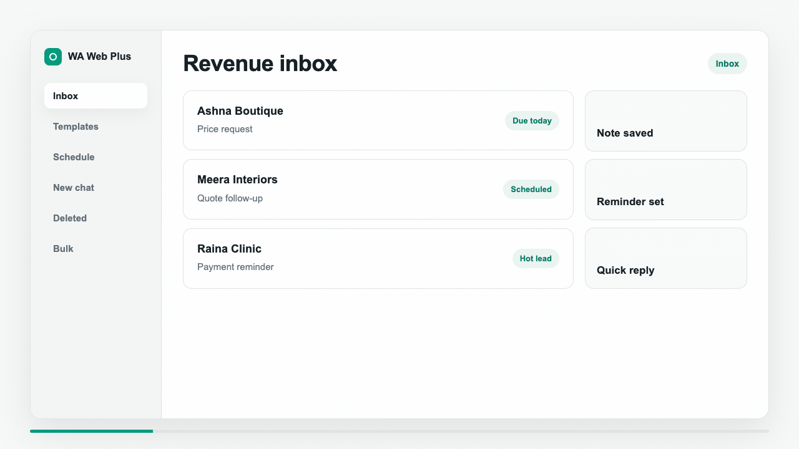

AR
Arya RetailQuote follow-up due today
Hot
Chrome extension for WhatsApp Web sales workflows
WA Web Utils helps you organise conversations, save the replies you send every day, schedule follow-ups and keep customer work moving without opening a separate CRM.
For sales, support, recruiting, education and service teams that already work from WhatsApp Web.
How it works
No new inbox to learn. Install the extension, open WhatsApp Web, then use the tools beside the chats you already manage.
Add WA Web Utils from the Chrome Web Store. The free workspace is ready without a separate account setup.
Keep using your existing chats. The workspace panel adds lead views, notes, tags, templates and follow-up controls.
Find conversations that need a reply, send a saved response, schedule the next step and keep the queue moving.
Product tour
Open a lead view, add context to a conversation, reuse an answer, schedule the next step and prepare a campaign without switching to a separate CRM tab.

Features
Use the extension to prioritise conversations, respond consistently and follow up at the right time. Start with the free workspace and unlock paid workflows when the volume justifies it.
Organize missed chats, hot contacts, tagged conversations, and follow-ups into focused work queues.
Save repeat replies for pricing, onboarding, support answers, reminders, and product details.
Plan follow-ups at the right time so promising conversations do not sink in the chat feed.
Prepare careful outreach with templates, pacing, readiness checks, and visible send status.
Start chat conversations with new numbers faster, including local-number handling.
Review locally captured deleted-message records from Settings when the feature is enabled.
Daily flow
WA Web stays as the front office. WA Web Utils adds the structure: who needs a reply, which message to send, what should happen next, and whether a campaign is ready.
Compare
Best fit
Keep warm leads visible, save quote replies and schedule the next follow-up before the conversation disappears.Sales and service teamsLead queues, notes, tags and reminders
Give recurring questions a consistent answer and keep customer context next to the chat instead of in scattered notes.Support and operationsTemplates, quick replies and chat context
Prepare outreach carefully with pacing and readiness checks while the team keeps using the same WhatsApp Web account.Recruiting, education and agenciesCampaign preparation and follow-up workflows
Use cases
Run sales follow-ups, notes, tags, templates, scheduling, and chat exports from one Chrome workspace.
Read workflowTrack leads, notes, tags, reminders, and missed conversations inside the WA Web workspace.
Read workflowPrepare broadcast sends with templates, pacing, and visible readiness checks.
Read workflowSchedule chat messages and reminders around real customer timing.
Read workflowReview locally captured deleted-message records with sender, group, time, and context.
Read workflowStart a conversation from a phone number without first saving it to your address book.
Read workflowFAQ
No. It runs as a Chrome extension alongside WhatsApp Web and adds organisation tools around the chats you already use.
Yes. Install the extension from the Chrome Web Store and start with the free workspace. Paid access is for higher-volume workflows and premium features.
WA Web Utils is designed as a local-first browser extension. Settings, workspace data, templates, and deleted-message history are intended to stay in the browser unless exported.
It is built for small sales and support teams, recruiters, educators, agencies and service businesses that manage customer conversations in WhatsApp Web.
Pricing
Start with the free workspace. Upgrade when you need higher-volume follow-ups, campaigns, templates and backup workflows.
$9.99/month
For short campaigns.
$50/6 months
Save 17%
$80/year
Save 33%
Ready
Install the free workspace first, then upgrade only when the paid workflows are useful to your team.